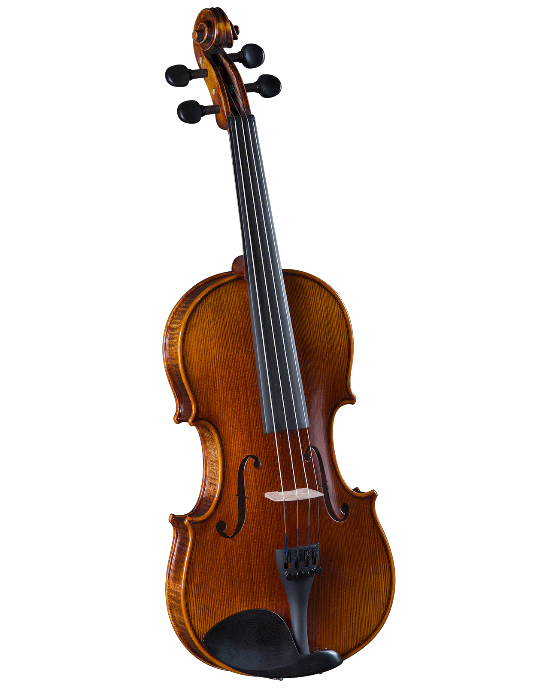

Violín Stradivarius 4/4
Fabricado a mano por el maestro luthier Marco Dotti en el taller de Edgar Russ en Cremona, siguiendo el modelo del violín construido por Guarneri del Gesu en el año 1742, cuyos propietarios anteriores fueron Ferdinand David de Leipzig y Jascha Heifetz.
- Tapa realizada en madera de pícea spalted típicamente italiana procedente del Val di Fiemme.
- Aros y mástil realizados en la misma madera que el fondo.
- Diapasón realizado en madera de ébano de la mejor calidad.
- Imprimación para madera a base de caseína y calcio.
- Acabado lacado con una laca de ámbar/aceite de linaza preparada por el propio Edgar Russ, que se colorea con pigmentos para dar al instrumento un aspecto lacado fiel al original.